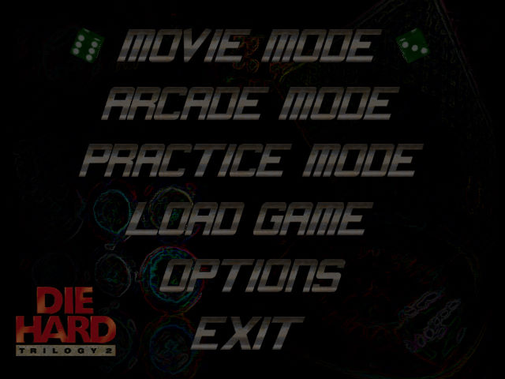
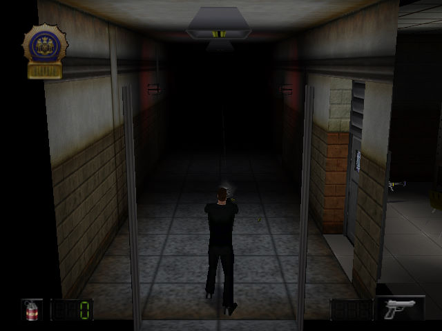

名稱：終極警探三部曲2／虎膽龍威三部曲2：拉斯維加斯／終極警探2 (Die Hard Trilogy 2: Viva Las Vegas，英文版)
簡介：n-Space 2000年出品的射擊動作遊戲，包含了第三人稱射擊、軌道射擊、駕駛競速等
多種元素，由Fox代理發行 [待補]。


保護：光碟SafeDisc 1.41，可直接到Bin目錄下執行（拷出亦可）。
備註：VirtualBox無法執行，虛擬機請使用VMware。
檔案：Die_Hard_Trilogy_2_patch.rar = 1.1更新檔（已破解）